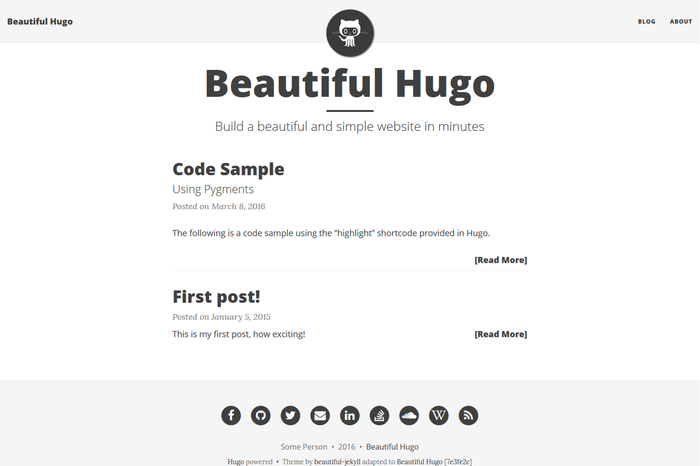
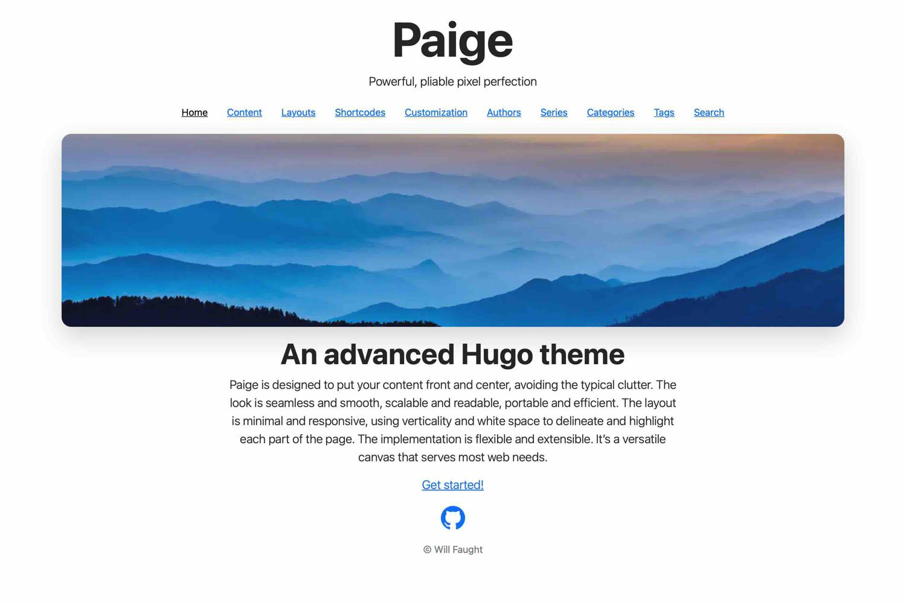
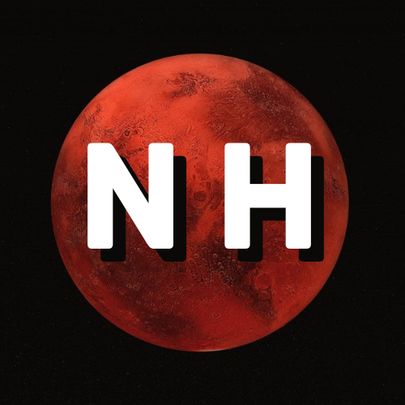

Ch-ch-ch-ch-changes
Posted on 16/09/2024
Word count: 1126
This website, nhartley.dev, has seen its fair amount of changes over the years. What once started as a barebones static site containing nothing more than empty 'About' and 'Post' pages, has developed into one of my proudest projects after being gifted two complete redesigns subsequent from 3 years of neglection.
Origin of nhartley.dev
With only a single year of coding under my belt, the desire to host my own website became apparent. It seemed that a moderate amount of students on my course had their own, including most of my close friends. So, in my second year of university, the decision to create my own was finalised.
It's purpose was to act as an academic blog, a place for me to house my ongoing coding projects, and any subjects of interest I wished to publish blog posts about. It would also serve as a way for potential employers to view my work at a glance, acting similarly to an online CV.
Having never touched HTML, CSS, or JavaScript before in my life, I had no idea where to start. Thankfully, one of my more technically experienced friends offered to help me build it and was the one who convinced me to set up a site in the first place. When I say, "offered to help me build it", I meant he built then entire thing for me.
Step one was buying a custom domain, which we settled on 'nhartley.dev'. This is simply the initial of my first name concatenated to my full last name followed by '.dev' (original, I know). Then the construction of the site began. My friend chose to use a Hugo template named Beautiful Hugo as it provided a nice interface and took care of the CSS slog.
Beautiful Hugo template example
I was very happy with my new site and subsequently published an obligatory "My First Post" post under the blog section. Though from here, I struggled with finding content to add as I had hardly any ongoing projects, nor did I have the time or motivation to add to my blog.
Being so overwhelmed with university work at the time, I was happy for someone else to take control of development and leave me with the end product. Although, this meant that I had no idea how the mechanics of my site actually functioned. I couldn't publish any new content or tweak areas without having to ask my friend to conduct another full tutorial on how to operate my own site. Knowing how to deploy any changes, or the differences between a localhost and the live site were still foreign concepts to me at the time.
With a lack of time and motivation to populate my site with content, I left it to rot from 2021 to 2024 with the only constant upkeep within those years being the renewal of my domain name.
Tactical nuke inbound
With dissertation writing coming to an end in mid 2024, my mind wandered to the future and how I was going to prepare for it. Having only recently found a great interest in cyber security within the past year, I set out on a mission to clean up old projects, and leave myself with an improved slate to start my professional career on. One of these being my forgotten website that I had abandoned 3 years earlier.
So I decided to breathe some new life into my site... by nuking the entire thing. All previous content was deleted, leaving a lowly 404 error page on reload. I was tired of the previous template, however the thought of creating everything from scratch was intimidating so I opted to use a different template instead, Paige.
Paige template example
Fed up with not knowing how to apply changes to my site without having to badger my friend for help, I set about finding an improved way to host it. GitHub Pages was the perfect solution, providing free hosting for static sites, version control, and an easy way to commit changes.
I added a couple of blog posts and that was about it, an improvement from my last site but ultimately not where I wanted it to be. The problem was that I never took the time to properly learn Hugo so I found the template difficult to use and it didn't allow me to customise exactly what I wanted. Again, motivation dipped, dissertation deadline came and went... once again this project was thrown onto the backburner.
If you want a thing done well, do it yourself
5 months later and I had now reached the conclusion of my university journey; all assigned work had been submitted, all deadlines had passed, graduation had been attended, and I had moved out of my final student housing. Now began the monumental task of job hunting. Though my GitHub, LinkedIn, and CV had been recently improved in preparation for this, I was still concerned about the state of my site and didn't want potential employers to visit it in it's immature stage.
As I mentioned above, I attempted to use Paige but never quite got the hang of it. I also experienced a weird bug where occasionally the CSS would completely break on my live site, leaving the raw html of each page exposed. So after completely revamping the site only a few months earlier, the entire repo was voided once again.
This time I didn't use Hugo or any templates, I created 100% of the codebase. The HTML and CSS was certainly fiddley on occasion, but I learnt a large amount of basic web design during development. Many thanks to lukebriggs.dev for making his personal website repo public so that I could peer at his div positioning format. This helped me out a lot with my CSS struggles! I also chose to go with a minimalistic design and took inspiration from Cloudflare Doc's colour palette of grey, white, and orange.
Overall I'm extremely happy with the outcome and very proud of this project. It's development has spanned over the past few years with many iterations in design. I'm looking forward to populating it with blog posts and project markdowns. If anyone is interested, this website's code can be found here on my GitHub.
During a recent trip abroad, I designed a simple personal logo to be used as this website's favicon and as my GitHub profile picture which displays my initials over the planet Mars. Admittedly, this did not take long to conjure and is most likely subject to change in the future, but I wanted to make it space related as I find this to be an incredibly fascinating subject and may explore in a future blog post.
nhartley logo